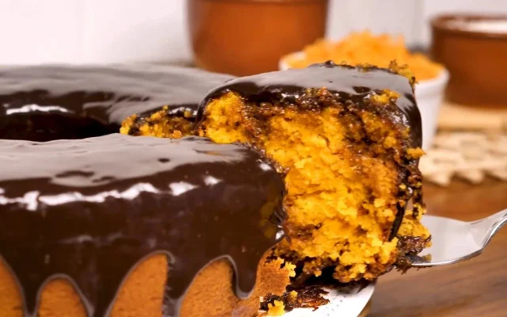

Receita de Bolo de Cenoura

Ingredientes:
Massa
1/2 xícara (Chá) de óleo
4 ovos
2 e 1/2 xícaras (chá) de farinha de trigo
3 cenouras médias raladas
2 xícaras (chá) de açúcar
1 colher (sopa) de fermento em pó
Cobertura
1 colher (sopa) de manteiga
1 xícara (chá) de açúcar
3 colheres (sopa) de chocolate em pó
1 xícara (chá) de leite
Utensílios
Batedeira
Liquidificador
Forma de Bolo
Prato de sobremesa
Modo de Preparo:
Tempo estimado: 40min
Massa
1- Em um liquidificador, adicione a cenoura, os ovos e o óleo, depois misture.
2- Acrescente o açúcar e bata novamente por 5 minutos.
3- Em uma tigela ou batedeira, adcione a farinha de trigo e depois misture novamente.
4- Acrescente o fermento e misture lentamente com uma colher.
5- Asse em um forno preaquecido a 180°C por aproximadamente 40 minutos.
Cobertura
6- Despeje em uma tigela a manteiga, o chocolate em pó, o açúcar e o leite, depois misture.
7- Leve a mistura ao fogo e continue misturando até obter uma consistência cremosa, depois despeje a calda por cima do bolo.